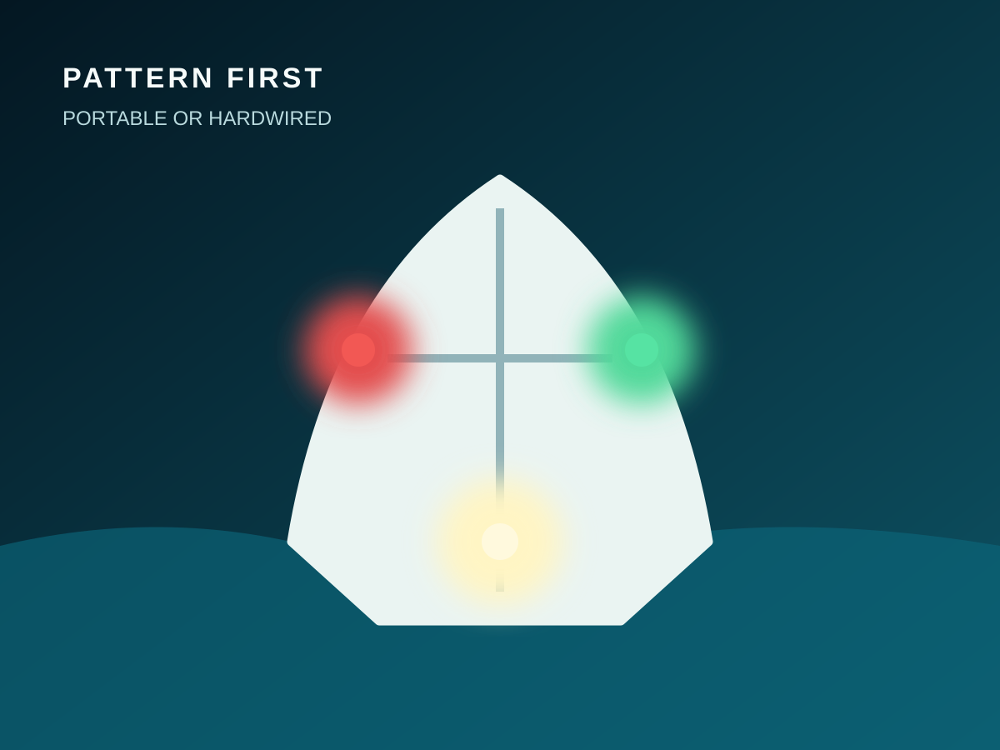
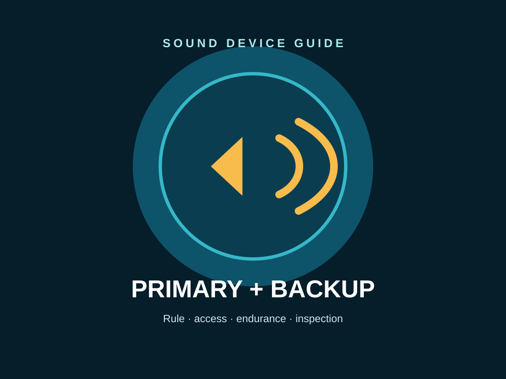
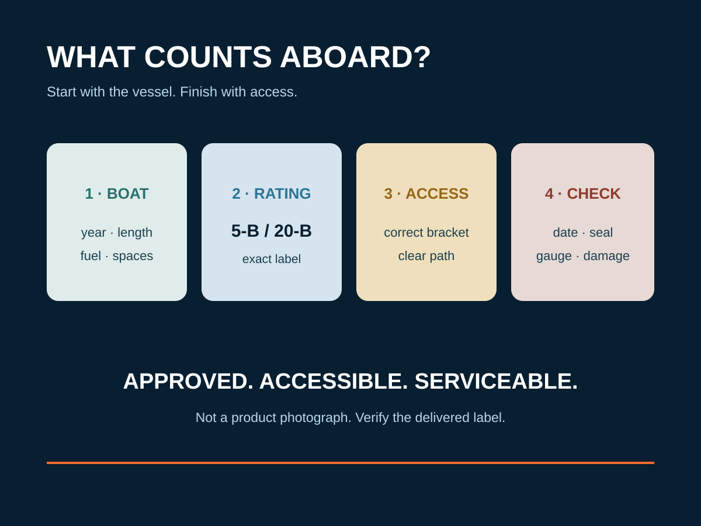
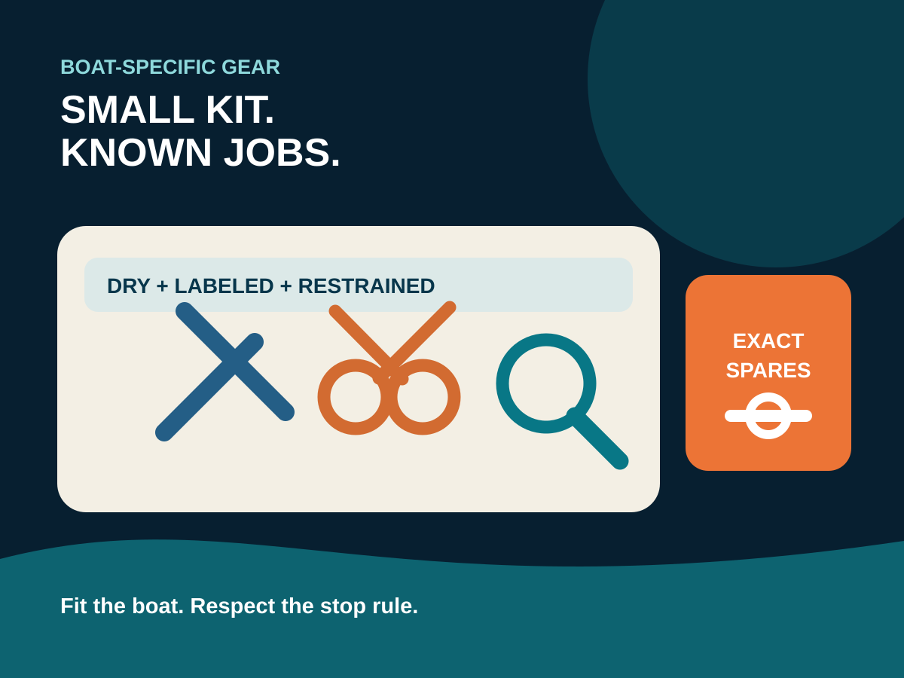
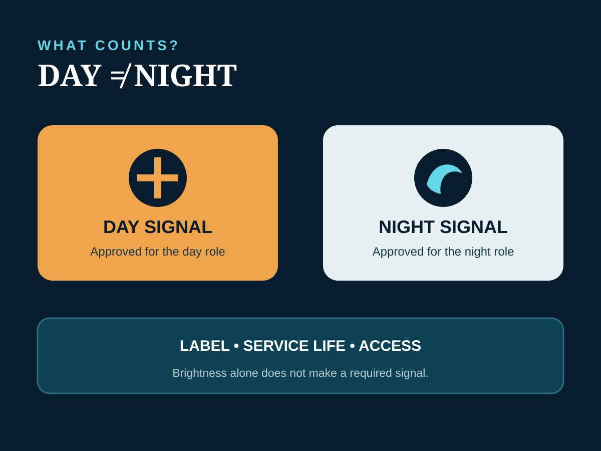
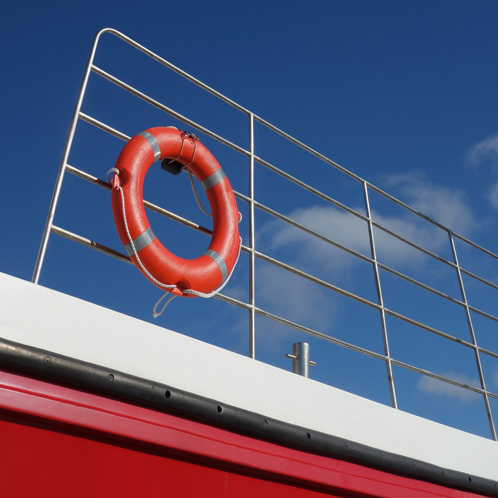

Buy before the freezeWinterization
The fall shopping list
Marine antifreeze, fuel stabilizer, battery maintainers, moisture control, cover support and tools that make seasonal service easier.
Shop the winterization guideLate summer means two very different things: haul-out and storage for northern boats, or a road trip toward warmer water. We built both paths—plus the evergreen gear worth owning all year.
Consumables that get used up, trailer items that prevent ruined trips, and the gear owners realize they need before storage or a long tow.
Marine antifreeze, fuel stabilizer, battery maintainers, moisture control, cover support and tools that make seasonal service easier.
Shop the winterization guide
Transom straps, bearing gear, tire monitoring, inflators, torque tools, locks, chocks, lights and worthwhile spares.
See the trailer picks
A long-haul plan for owners moving toward the Chesapeake, Carolinas, Florida or Gulf Coast instead of parking the boat until spring.
Plan the southbound towThese guides focus on fit, safety, installation and ownership—not just a feature list.

Choose portable or hardwired lights by pattern, certification, placement, power and backup.
Choose the light system
Compare a pealess whistle, handheld air horn and installed electric horn by rule, access and backup.
Choose the sound system
Count approved 5-B and 20-B units correctly, then keep the exact extinguisher accessible.
Choose what counts
Build the smallest dry kit that fits the fasteners, safe jobs and exact spares on your boat.
Build the right kit
Separate day from night, verify the exact approval and stop counting expired or unapproved gear.
Compare distress signals
Choose an approved cushion, ring or horseshoe—and understand why a rescue bag is supplemental.
Compare throwable devicesCompare 7x50, compass, compact and stabilized options by motion, fit and real onboard use.
Compare marine binoculars
Clear picks for inland lakes, fishing and coastal cruising, including ecosystem and installation costs.
Compare chartplotters
Durable options that stay cold without taking over the deck, from day-boat duty to long weekends.
Compare coolers
Comfortable, correctly rated options adults and children are more likely to wear consistently.
Compare life jacketsUse the gear guides with the maintenance and trailering library so equipment ends up installed, serviced and used correctly.
Engine, fuel, freshwater, sanitation, batteries, hull, trailer, cover and the spring notes owners forget to leave themselves.
Open the checklistA systematic pre-departure inspection for tires, bearings, lights, brakes, coupler, chains, winch and transom restraints.
Check the trailerBuild an annual maintenance rhythm around the actual systems aboard instead of waiting for the next failure.
Go to maintenanceSome retail links may earn a commission. We still choose the job and product category first, avoid fake urgency and keep manufacturer instructions above affiliate conversion.